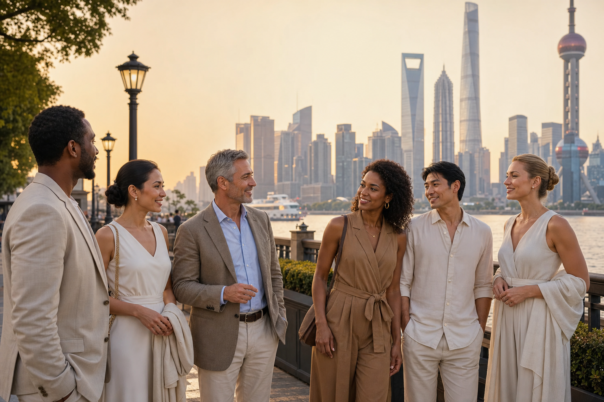
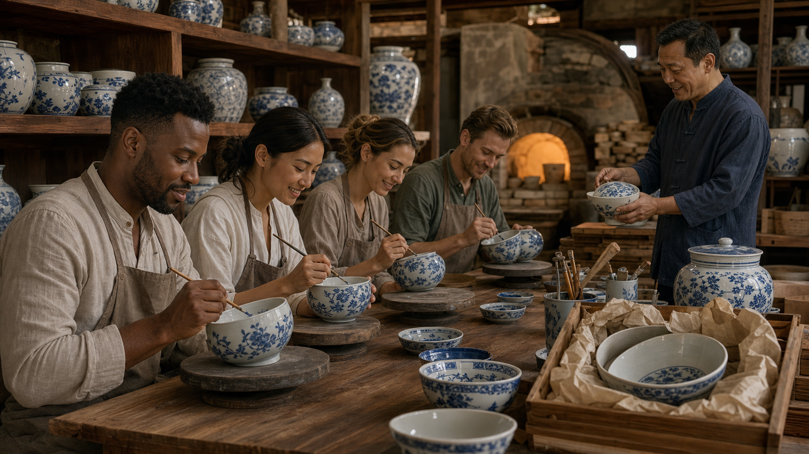
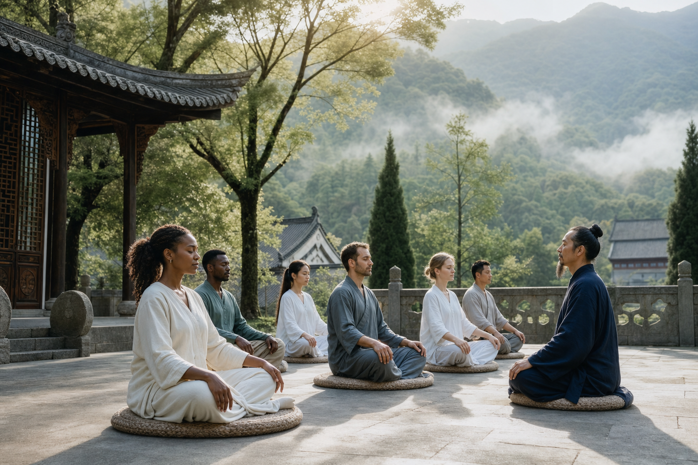
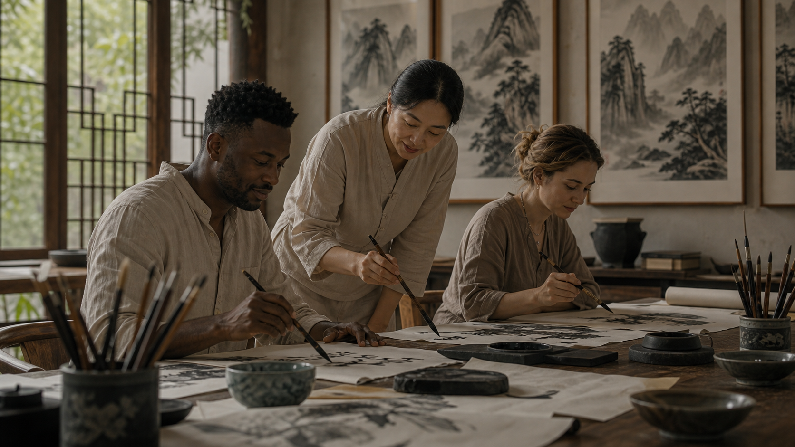
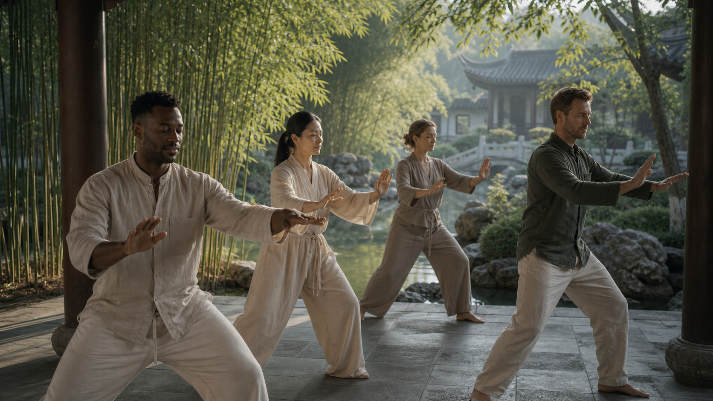
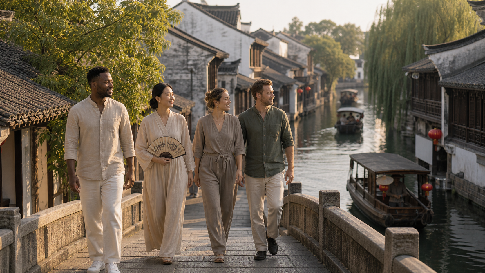
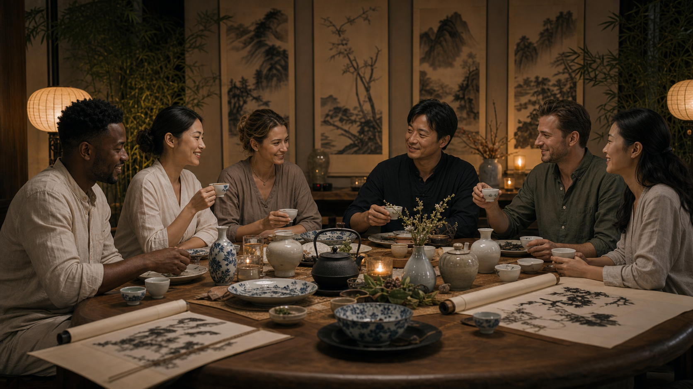
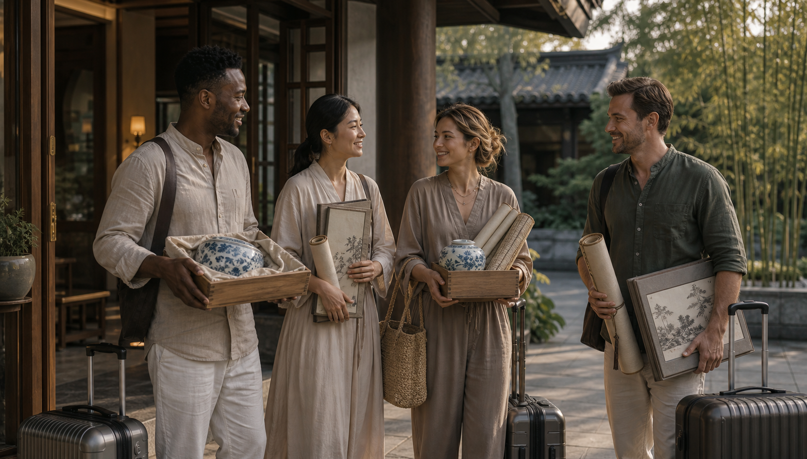

航班建议
- 首选抵达：上海浦东国际机场 PVG
- 备选抵达：杭州萧山国际机场 HGH
- 建议离境：上海浦东 PVG，杭州 HGH 可作为备选，视最终线路确认
- 第 1 天：入住上海，开启外滩之旅与都市之旅
- 第 2 天：前往中国景德镇（瓷器之都），航班确认后安排高铁或专车衔接
- 建议尽量选择下午前抵达，方便接机、入住、欢迎茶与休整
China Mind-Body Wellness Retreat
面向多元国际高端客群的中国文化深度体验：上海、江南水乡、景德镇，结合疗愈修行、瓷器手作、书法国画、轻奢餐饮与高端私定服务。
营地核心体验为中国境内 10 天。线路从上海国际大都市开启，前往中国景德镇（瓷器之都）完成瓷器体验，再进入浙江展开疗愈修行、江南水乡、啤酒体验与西湖游历。因国际航班跨时区与抵离时间安排，客户实际旅行通常可按 11 天 9 晚沟通。图片仅供参考，因路线、天气、供应商与现场条件等原因，最终以实际安排为准。
这不是普通观光团，而是一段中国文化深度体验与高端定制疗愈之旅：先在上海完成国际化抵达和城市切换，再到中国景德镇（瓷器之都）完成瓷器制作与送烧，随后进入浙江身心练习、桐柏宫道教文化相关内容、书画体验、水乡与西湖游历。
打坐冥想、呼吸练习、茶与书写帮助客人从国际旅行节奏切换到疗愈营节奏。
客人在中国景德镇（瓷器之都）亲手做瓷器，并在行程结束时带走自己的瓷器、书法和国画作品，形成可触摸、可带回家的记忆。
上海都市开场、浙江修行、水城古镇、西湖意境、花园式住宿、地方餐饮与半天精酿啤酒体验，形成传统与当代的对照。
每一项体验都避免过度专业化，以美感、参与感和舒适度为优先。
参考高端疗愈营的日程逻辑：前段完成城市抵达和瓷器手作，中段安排数天疗愈修行与文化体验，后段先去江南水乡，再去西湖，最后返程。实际日期、路线、天气与供应商安排以最终确认单为准。
以下文字可直接用于客户沟通：说明每一天为什么这样安排、客人现场会做什么，以及这一天的体验感。

客人抵达上海国际大都市后入住休整。傍晚安排外滩与城市慢行，用黄浦江、历史建筑和当代都市感完成旅行开场，让国际客人先舒适进入中国节奏。

前往中国景德镇（瓷器之都）。在导师指导下，客人体验泥土成型、器物比例、手部力度与青花画瓷。选定作品交由工作室烧制、整理和保护性打包，作为旅程结束时可带走的核心纪念。
景德镇作品进入烧制流程后，行程进入浙江，结合打坐、书画、轻运动和桐柏宫道教文化相关内容，形成更完整的疗愈修行段落。

客人抵达浙江后进入更安静的江南场域。上午从呼吸、坐姿和安静专注开始，下午结合茶、书写与桐柏宫道教文化相关内容，帮助客人从旅行状态进入修行状态。

书法体验中，导师会讲解笔压、墨色、身体姿态和节奏，让外国客人通过手的动作进入中国文化。国画课程进一步把安静感转化为笔墨、留白、浓淡和山水构图。
浙江段保留更慢的疗愈节奏，同时穿插半天啤酒体验，让行程有文化深度，也有轻松社交感。

上午以冥想和轻柔身体练习整合前几天的旅行节奏。下午可根据客人状态安排茶、静心书写、艺术加深或桐柏宫道教文化相关内容延展。
在浙江修行期间穿插半天参观精品啤酒厂，了解原料、发酵、生产流程和精酿品鉴语言，并安排啤酒体验。可按客人需求安排非酒精替代饮品，让活动保持轻松、包容和社交友好。
修行结束后先去江南水乡，再去西湖，让中国文化和疗愈旅行形成完整节奏。

修行结束后，先走进江南水乡，看河道、石桥、院落、街巷肌理和地方小店。参访节奏以观察、拍摄和轻交流为主，不做赶场式观光。
水乡之后再去西湖，感受水面、桥、园林、远山和层次感。团队同步复核瓷器烧制或整理状态，并与客人确认书法、国画作品的保存和携带方式。
最后两天保留给分享、告别晚宴、作品保护性打包和返程安排。

最后一个完整日保持安静和仪式感。客人分享体验、保留个人时间，确认作品保护性打包，并以告别晚宴完成从疗愈营回到日常生活的过渡。

团队协助退房、送机、行李动线和后续旅行问题。客人带着保护性打包好的瓷器、书法与国画作品离开；长途国际航班可能在第 11 个自然日抵达目的地。
项目价格 5999.99 美金起 / 人，不含往返中美航班。价格标准默认为标间双人住；如有单人住宿需求，需要补差价。正式报价建议在日期、人数、酒店等级、房型、航班路线和供应商可用性确认后出具。
为了让报价和服务更准确，建议在正式报名之前完成以下信息收集。
请发送邮件至 xletravels@gmail.com，并附上：人数、年龄段、期望日期、出发城市、房型偏好、饮食或行动需求，以及想了解的问题。